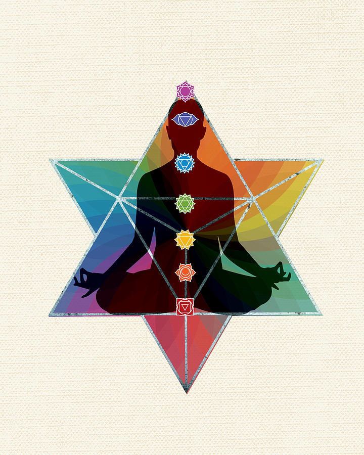

La Merkaba se trata de dos tetraedros entrelazados (pirámides de base triangular), uno apuntando hacia el cielo, y otro apuntando hacia la tierra. Cada Merkaba tiene asociado un toroide (cada uno que rota en sentido positivo y otro que rota en sentido negativo), y la unión de ambas pirámides forma la estrella tetraédrica o Merkaba, y el Doble Toroide.
Los integrantes de muchas culturas antiguas se consideraban hijos (manifestación) de un Padre (lo celestial - el Sol) y una Madre (lo matricial - la Tierra), componiendo una trinidad. Los templos piramidales que estas civilizaciones han plantado tienen, en líneas generales, el propósito de antenas de captación de la información del Cielo y la Tierra.
La Estrella Tetraédrica es una trinidad: una geometría que capta “lo de arriba” y “lo de abajo” (a través de las pirámides orientadas hacia arriba y abajo respectivamente) y lo sintetiza en el punto cero. Es la idea exquisita de la trascendencia de las polaridades.